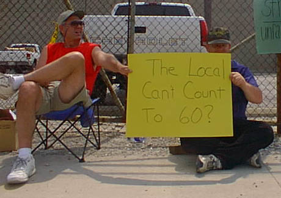
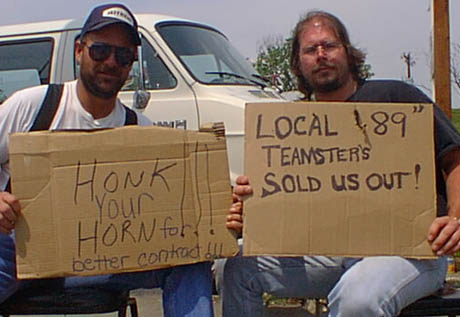

The Jeffboat Wildcat
Joshua DeVries and Tim Russ, Labor Notes, May 19, 2001
A weeklong wildcat at the largest inland shipyard in the world ended May 7. Strikers returned to work at the massive Jeffboat facility in Jeffersonville, Indiana with a guarantee of no recriminations.
This brave action was the result of unsafe working conditions reaching the boiling point. One example: management expects electrical workers to work in the rain. Rank and file workers had organized for months for a better contract, demanding $5 over three years. They were aiming high, and willing to back up their demands with action.
The Jeffboat workers, members of Teamsters Local 89, build and repair huge river barges across the Ohio River from Louisville, Kentucky.
An impressive 99 percent of the 800 workers honored the picket line, set up by Jeffboat workers who are also members of the Industrial Workers of the World. To avoid any confusion over whether the strike was officially authorized, picket signs read "Don't Drink Milk!" Neither Teamster officials nor Jeffboat management were able to force workers to accept their final offer.
CLERICAL ERROR?
On April 30, over 500 members packed their union hall to hear local president Fred Zuckerman recommend management's substandard last and final offer. They rejected it 4 to 1. Under Teamster rules, a strike is automatically authorized when a final offer is rejected.
That's when Zuckerman informed the workers that the union could not call a strike because of a "clerical error" made two months earlier. The contract's duration clause required that the union or the employer notify the other party if they wanted the contract to expire. The union claimed that they had done so on the 59th day and the employer had refused. For two months the union had bargained knowing they had no credible strike threat, while the rank and file were kept in the dark. The company had been seeking a long agreement, to guarantee stability because of a contract for new work it had received recently.
The workers were left with the option of obeying or taking matters into their own hands. Monday morning, May 1, a handful of IWW members who work in the yard put up a picket at one of the five entrances. No one crossed the line at that gate, and when the workers inside found out there was a strike line, they left and Jeffboat was completely shut down. During the week, fewer than ten workers scabbed.
At a meeting on May 7, again with over 500 members present, the IBT leadership put the rejected offer to the membership once more. This time it was voted down 16-to-1. It didn't look as though a continued strike could make gains at that point, so the workers ended it, but with a commitment to carry the struggle into the shop. They will continue to work under the one-year extension of the old contract.

NOW WHAT?
Workers' demands are twofold, those directed at the union and those at the company.
To the union, the demands center around democracy. Workers want to elect their business agent and the negotiating committee, by areas in the yard. They want to democratically decide on demands and to get regular reports from the committee. They also want strike pay for the week they were out.
It is unlikely that the union will provide strike pay for an unsanctioned strike. The other issues may also be difficult to resolve in the short term, since the local, the largest in Kentucky, covers a large geographic area and contains roughly 18,000 members.
To the company, the workers demand that negotiations be reopened. They want full coverage of health care premiums, an end to arbitrary discipline, and a decent raise. They also want a worker-controlled health and safety committee that can shut down unsafe work. In the last year, workers have refused dangerous work in some areas, and they want this problem addressed formally.
At a meeting called by Jeffboat IWW members on the afternoon of May 7, a committee was established to build a movement inside. They discussed a variety of workplace actions and committed to expand the committee. The IWW's national General Defense Committee established a fund to assist them in emergencies.
DECERT?
Relationships with the union have been put to the test by officers' stonewalling. Any union presence at Jeffboat was a result of rank and file organizing, not any effort by the Teamsters union. Many workers (primarily not IWW members) are calling for decertification and want out of the AFL-CIO. Because of the contract extension, they do not have that option at this time due to National Labor Relations Board rules.
As for gaining control of Local 89, Teamsters for a Democratic Union has a strong presence in the local, especially among UPS workers who make up the largest chunk of it, some 7,000 members. A TDU-backed reform group, the United Rank and File caucus, came within 117 votes of winning the last officers election in 1999. But there is little or no TDU presence at Jeffboat itself.
The workers have nine months until the window for decertification opens, and a year till the contract expires, in which to plan their strategy. According to Terry Tapp, an IWW member in the shop, at this point the workers are so disgusted that they simply want out of the Teamsters and out of the AFL-CIO.
Because of AFL-CIO no-raiding rules, if they left the Teamsters, they would not be permitted to join another union in the Federation for another year. They could create an independent union or join an existing union outside the AFL-CIO. However, in decertifications, workers often end up with no union at all.
It is too early to say what workers' strategy will be. They have one strong card: their clearly demonstrated unanimity in favor of democracy. Their complete success in shutting down the yard can only give them a strong sense of power.
Joshua DeVries, who visited Jeffboat during the wildcat, is executive board chair of the IWW and a member of the Association of Flight Attendants. Tim Russ is an organizer for TDU.

